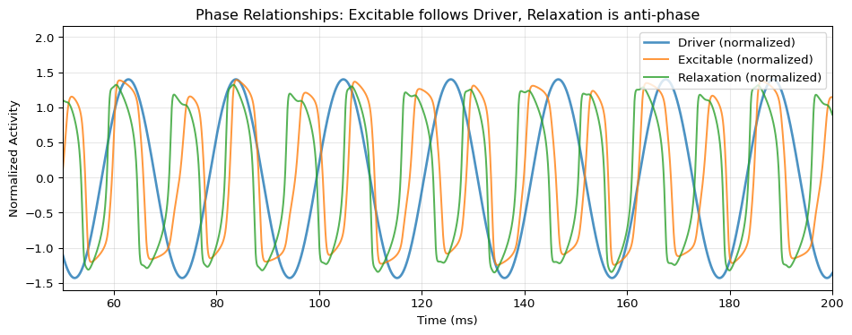

This example demonstrates creating a heterogeneous 3-node network in TVBO and running it via PyRates. We design a network where a slow oscillator drives two other nodes into opposite activity regimes, clearly visualizing the inter-node coupling.
Network Design
Node 0 (Driver): Slow Hopf oscillator (~0.05 Hz) - acts as a pacemaker
Node 1 (Excitable): FitzHugh-Nagumo in excitable regime - fires when driven above threshold
Node 2 (Bistable): Modified oscillator - switches between low/high states
The driver provides excitatory input to Node 1 and inhibitory input to Node 2, causing anti-phase behavior.
Define Three Different Dynamics
from tvbo import Dynamics# Slow Hopf oscillator - the DRIVER (~0.05 Hz period)# Large amplitude, slow oscillation to clearly modulate other nodesdriver = Dynamics.from_string("""name: SlowDriverparameters: a: value: 0.5 omega: value: 0.3state_variables: x: equation: rhs: "a*x - omega*z - x*(x**2 + z**2) + c_in" initial_value: 1.0 z: equation: rhs: "omega*x + a*z - z*(x**2 + z**2)" initial_value: 0.0coupling_terms: c_in: {}""")# FitzHugh-Nagumo in EXCITABLE regime# Will fire bursts when driven by positive input from driverfhn = Dynamics.from_string("""name: Excitableparameters: a: value: 0.7 b: value: 0.8 tau: value: 12.5 I_ext: value: 0.3state_variables: v: equation: rhs: "v - v**3/3 - w + I_ext + c_in" initial_value: -1.0 w: equation: rhs: "(v + a - b*w)/tau" initial_value: -0.5coupling_terms: c_in: {}""")# Van der Pol as relaxation oscillator# Receives INHIBITORY input - active when driver is LOWvdp = Dynamics.from_string("""name: Relaxationparameters: mu: value: 2.0state_variables: x: equation: rhs: "mu*(x - x**3/3 - w) + c_in" initial_value: -1.5 w: equation: rhs: "x/mu" initial_value: 0.0coupling_terms: c_in: {}""")
/Users/leonmartin_bih/tools/tvbo/.venv/lib/python3.13/site-packages/requests/__init__.py:113: RequestsDependencyWarning: urllib3 (2.6.3) or chardet (6.0.0.post1)/charset_normalizer (3.4.4) doesn't match a supported version!
warnings.warn(
# Run with PyRates backend - returns TVBO TimeSeriesexp.integration.duration =300.0exp.integration.step_size =0.01res = exp.run('pyrates')
Compilation Progress
--------------------
(1) Translating the circuit template into a networkx graph representation...
...finished.
(2) Preprocessing edge transmission operations...
...finished.
(3) Parsing the model equations into a compute graph...
...finished.
Model compilation was finished.
Simulation Progress
-------------------
(1) Generating the network run function...
(2) Processing output variables...
...finished.
(3) Running the simulation...
...finished after 0.5069850829895586s.
# Check the result formatprint(res)print(f"\nData shape: {res.data.shape} → (time, state_vars, nodes, modes)")
For manual control, you can still run PyRates directly:
import osimport shutilfrom pyrates.frontend import CircuitTemplatefrom pyrates import clear# Write to temporary packageos.makedirs("_net", exist_ok=True)open("_net/__init__.py", "w").close()withopen("_net/model.yaml", "w") as f: f.write(yaml_content)# Load and simulate - longer time to see slow modulationcircuit = CircuitTemplate.from_yaml("_net.model.HeterogeneousModulation")result = circuit.run( step_size=0.01, simulation_time=300.0, # Longer to see multiple driver cycles outputs={"driver": "Driver/SlowDriver_op/x","excitable": "Excitable/Excitable_op/v","relaxation": "Relaxation/Relaxation_op/x", }, solver="heun", vectorize=False, # Required for heterogeneous circuits (PyRates bug))clear(circuit)shutil.rmtree("_net")print(f"Simulated {len(result)} time points over {result.index[-1]:.0f} ms")
Compilation Progress
--------------------
(1) Translating the circuit template into a networkx graph representation...
...finished.
(2) Preprocessing edge transmission operations...
...finished.
(3) Parsing the model equations into a compute graph...
...finished.
Model compilation was finished.
Simulation Progress
-------------------
(1) Generating the network run function...
(2) Processing output variables...
...finished.
(3) Running the simulation...
...finished after 0.6098217089893296s.
Simulated 30000 time points over 300 ms
fig, ax = plt.subplots(figsize=(10, 4))# Overlay all three normalized to similar scaledriver_norm = (result["driver"] - result["driver"].mean()) / result["driver"].std()excitable_norm = (result["excitable"] - result["excitable"].mean()) / result["excitable"].std()relaxation_norm = (result["relaxation"] - result["relaxation"].mean()) / result["relaxation"].std()ax.plot(t, driver_norm, 'C0', lw=2, alpha=0.8, label="Driver (normalized)")ax.plot(t, excitable_norm, 'C1', lw=1.5, alpha=0.8, label="Excitable (normalized)")ax.plot(t, relaxation_norm, 'C2', lw=1.5, alpha=0.8, label="Relaxation (normalized)")ax.set_xlabel("Time (ms)")ax.set_ylabel("Normalized Activity")ax.set_title("Phase Relationships: Excitable follows Driver, Relaxation is anti-phase")ax.legend(loc='upper right')ax.grid(True, alpha=0.3)# Zoom to show phase relationshipax.set_xlim(50, 200)plt.tight_layout()plt.show()

Use Case 2: Synaptic Plasticity
This section demonstrates how to model short-term synaptic plasticity using TVBO and PyRates. We implement the Tsodyks-Markram model which captures both synaptic depression and facilitation.
Network Architecture
The network models a single pre-synaptic neuron connecting to a post-synaptic neuron through three parallel synaptic pathways, each with different plasticity:
flowchart LR
Pre["Pre-synaptic<br/>Neuron"]
Dep["Depression<br/>Synapse"]
Fac["Facilitation<br/>Synapse"]
TM["Tsodyks-Markram<br/>Synapse"]
Post["Post-synaptic<br/>Neuron"]
Pre -->|"r_out"| Dep
Pre -->|"r_out"| Fac
Pre -->|"r_out"| TM
Dep -->|"r_eff"| Post
Fac -->|"r_eff"| Post
TM -->|"r_eff"| Post
This allows direct comparison of how different plasticity mechanisms modulate transmission to the same post-synaptic target.
Synaptic Plasticity Models
Short-term synaptic plasticity modulates synaptic strength based on recent activity:
Facilitation: Repeated stimulation increases release probability
Tsodyks-Markram: Combines both effects with resource variable \(x\) and utilization \(u\)
Output Variables in PyRates
TVBO supports output variables with algebraic equations (e.g., r_eff = r_in * x). These are exported to PyRates as output-type variables. However, PyRates only allows monitoring state variables directly. Output variables are computed during simulation but cannot be accessed via the outputs parameter of circuit.run().
Solution: Monitor the underlying state variables and compute the output expressions post-hoc. This is demonstrated in this example.
import osimport shutilfrom pyrates.frontend import CircuitTemplatefrom pyrates import clearimport numpy as np# Export using streamlined APIyaml_plasticity = exp_plasticity.to_yaml(format="pyrates")# Write to temporary packageos.makedirs("_plasticity", exist_ok=True)open("_plasticity/__init__.py", "w").close()withopen("_plasticity/model.yaml", "w") as f: f.write(yaml_plasticity)# Create pulsed input signal (bursts of activity)T =500.0dt =0.1time = np.arange(0, T, dt)# Create burst pattern: pulses at regular intervalspulse_times = [50, 100, 150, 200, 250, 350, 400, 450]input_signal = np.zeros_like(time)for pt in pulse_times:# Each pulse is a brief 10ms square wave mask = (time >= pt) & (time < pt +10) input_signal[mask] =5.0# Load and simulate# Note: PyRates output variables (algebraic equations) cannot be monitored directly.# We monitor state variables and compute outputs post-hoc.circuit = CircuitTemplate.from_yaml("_plasticity.model.SynapticPlasticityComparison")result_plasticity = circuit.run( step_size=dt, simulation_time=T, inputs={"PreSynaptic/RateNeuron_op/I_ext": input_signal}, outputs={"pre": "PreSynaptic/RateNeuron_op/r","depression_x": "DepressionSynapse/Depression_op/x","facilitation_u": "FacilitationSynapse/Facilitation_op/u","tsodyks_x": "TsodyksSynapse/TsodyksMarkram_op/x","tsodyks_u": "TsodyksSynapse/TsodyksMarkram_op/u","post": "PostSynaptic/RateNeuron_op/r", }, solver="heun", vectorize=False, # Required for heterogeneous circuits (PyRates bug))clear(circuit)shutil.rmtree("_plasticity")# Compute output variables (r_eff = r_in * state) post-hoc# Since edges have weight=1.0 to synapses, r_in equals the source r_outresult_plasticity["depression_out"] = result_plasticity["pre"] * result_plasticity["depression_x"]result_plasticity["facilitation_out"] = result_plasticity["pre"] * result_plasticity["facilitation_u"]result_plasticity["tsodyks_out"] = result_plasticity["pre"] * result_plasticity["tsodyks_x"] * result_plasticity["tsodyks_u"]print(f"Simulated {len(result_plasticity)} time points")
Compilation Progress
--------------------
(1) Translating the circuit template into a networkx graph representation...
...finished.
(2) Preprocessing edge transmission operations...
...finished.
(3) Parsing the model equations into a compute graph...
...finished.
Model compilation was finished.
Simulation Progress
-------------------
(1) Generating the network run function...
(2) Processing output variables...
...finished.
(3) Running the simulation...
...finished after 0.09829549997812137s.
Simulated 5000 time points